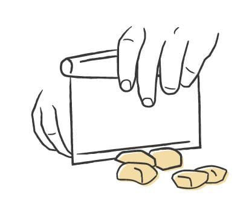
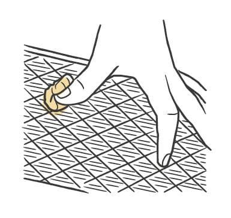
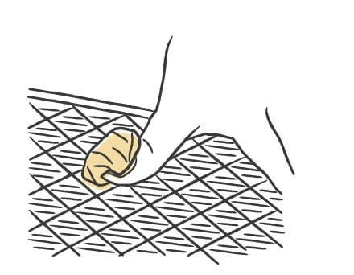
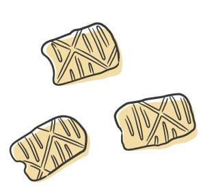

Pasta / Shapes
Ricotta Gnocchi
- Rest
- chilled at least 30 minutes, up to 24 hours
- Source
- Pasta, Missy Robbins
- Formed
- dumpling
- Region
- Not specific to one region; most common in central Italy, especially Umbria and Lazio
Shaping




Method
- Make the ricotta gnocchi dough.
- Dust a wooden board with a little 00 flour. Line a sheet pan with parchment, then dust the parchment with semolina.
- Take a small handful of dough and roll it gently by hand into a rope about 3/4 inch across. If it sticks, dust your hands with a little 00 flour, and use as little as you can. Roll out the rest of the dough the same way.
- Cut the ropes into 1-inch pieces with a knife or bench scraper.
- Give a wooden gnocchi board, or a fork's back, a light coat of 00 flour. Press a piece into it with your thumb and drag it down the ridges, rolling your thumb out and away from you. The piece curls into a small shell with ribs on the outside.
- Shape the rest, laying them ribbed side up on the sheet pan.
- Cover the pan with plastic wrap and chill at least 30 minutes, up to 24 hours, before cooking.
Notes
- Dimensions run 3/4-inch rope cut into 1-inch pieces.
- Needs a ridged surface for the thumb drag, either a wooden gnocchi board or a fork's back. Lay the finished pieces ribbed side up on the pan.
- Ricotta gnocchi use their own dough, which is not one of the doughs in this collection.
- A light touch is the whole trick. Overkneading the dough or pressing hard during the drag turns them gummy. They should be softer and more pillowy than gnudi, which hold more structure.
- Chilling is a required step, not just storage. Minimum 30 minutes.
- Good with a simple red sauce, or with broccoli pesto.